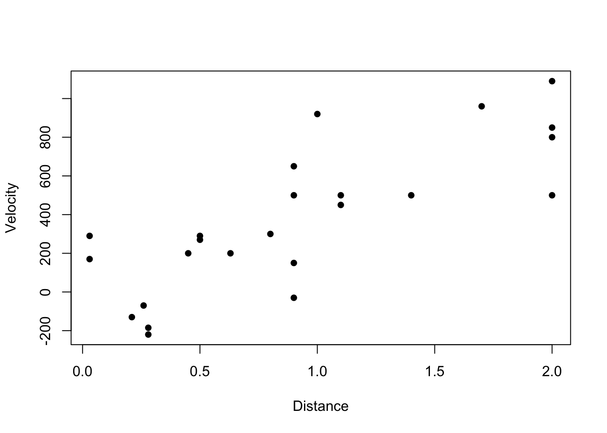

Chapter 5 Multivariate Random Variables
These notes will explore pairs of random variables that may be related. To understand the relationship between these variables, we will start by defining joint probability distributions. Following that, we will examine the concepts of covariance and correlation to quantify and describe the nature of the relationship between the two variables.
5.1 Joint Probability Distributions
Definition 5.1 Let \(X\) and \(Y\) be two discrete random variables defined on the sample space \(\Omega\) of an experiment. The joint probability mass function, \(p(x,y)\), is defined for each pair of numbers (x,y) by:
\[p(x,y) = P(X=x \text{ and } Y=y)\]
Note: \(p(x,y) \geq 0\) and \(\sum_x \sum_y p(x,y) = 1\)
Definition 5.2 Let \(X\) and \(Y\) be two continuous random variables defined on the sample space \(\Omega\) of an experiment. The joint probability density function \(f(x,y)\) for variables \(X\) and \(Y\) is a function satisfying:
- \(f(x,y) \geq 0\)
- \(\int_{-\infty}^{\infty} \int_{-\infty}^{\infty} f(x,y) dy dx = 1\)
Note: For any two-dimensional set A, \(P((X,Y) \in A) = {\int \int}_A f(x,y) dy dx\).
Note: If A is a two-dimensional rectangle
\(\{(x,y): a \le x \le b, c \le y \le d\}\), then: \(P((X,Y) \in A) = \int_a^b \int_c^d f(x,y) dy dx\)
Example 5.1 Let \(f(x,y) = c xy, 0 \leq x,y \leq 1\). Find \(c\) so that \(f(x,y)\) is a valid joint pdf.
5.2 Marginal Probability Functions
Definition 5.3 The marginal probability mass function of a discrete random variable \(X\) with joint pmf \(p(x,y)\) is denoted by \(p_X(x)\) and is given by: \(p_X(x) = \sum_y p(x,y)\)
Definition 5.4 The marginal probability density function of a continuous random variable X with joint pdf \(f(x,y)\) is denoted by \(f_X(x)\) and is given by: \(f_X(x) = \int_y f(x,y) dy\)
Example 5.2 An apartment complex has the following joint distribution of \(X\) bedrooms and \(Y\) bathrooms. Determine the marginal pmfs and calculate the probability a randomly selected apartment has more bedrooms than bathrooms (i.e., \(P(X>Y)\)).
| Y | X | 1 | 2 | 3 | \(\Sigma\) |
| 1 | 0.3 | 0.3 | 0 | |
| 2 | 0 | 0.3 | 0.1 | |
| \(\Sigma\) |
Example 5.3 Let \(X\) and \(Y\) have the joint pdf, \(f(x,y)\), as follows.
\(f(x,y) = \begin{cases} \frac{4}{3}(xy + x) & 0 \leq x \leq 1, 0 \leq y \leq 1\\ 0 & \text{otherwise} \end{cases}\) :::
- Confirm \(f(x,y)\) is a valid pdf
- Determine the marginal pdfs
- Calculate \(P(X<1/2,Y<1/2)\)
5.3 Independent Random Variables
Definition 5.5 Two discrete random variables are independent if \(p(x,y) = p_X(x) \cdot p_Y(y)\).
Definition 5.6 Two continuous random variables are independent if \(f(x,y) = f_X(x) \cdot f_Y(y)\).
Definition 5.7 If two random variables are not independent, they are dependent.
Note: You can also check independence by seeing if the conditional distribution equals the marginal distribution, i.e., \(p_{Y|X}(y|x) = p_{Y}(y)\) OR \(p_{X|Y}(x|y) = p_X(x)\).
Example 5.4 Let \(X\) and \(Y\) have the joint pdf, \(f(x)\), as follows. Are \(X\) and \(Y\) independent?
\(f(x,y) = \begin{cases} \frac{4}{3}(xy + x) & 0 \leq x \leq 1, 0 \leq y \leq 1\\ 0 & \text{otherwise} \end{cases}\)
Example 5.5 An apartment complex has the following joint distribution of \(X\) bedrooms and \(Y\) bathrooms. Are \(X\) and \(Y\) independent?
| Y | X | 1 | 2 | 3 | \(\Sigma\) |
| 1 | 0.3 | 0.3 | 0 | |
| 2 | 0 | 0.3 | 0.1 | |
| \(\Sigma\) |
5.4 Conditional Distributions
Definition 5.8 Let \(X\) and \(Y\) be two discrete distributions with joint pmf \(p(x,y)\) and marginal pmf of \(X\) \(p_X(x)\). Then for any \(X\) value of \(x\) for which \(p_X(x) > 0\), the ***conditional probability mass function} of \(Y\) given that \(X=x\) is: \[p_{Y|X}(y|x) = \frac{p(x,y)}{p_X(x)} \]
Definition 5.9 Let \(X\) and \(Y\) be two continuous distributions with joint pdf \(f(x,y)\) and marginal pdf of \(X\) \(f_X(x)\). Then for any \(X\) value of \(x\) for which \(f_X(x) > 0\), the ***conditional probability density function} of \(Y\) given that \(X=x\) is:
\[f_{Y|X}(y|x) = \frac{f(x,y)}{f_X(x)} \]
Example 5.6 For the apartment example, determine the conditional pmf \(p_{Y|X}(y|x=2)\). The joint pmf, \(p_{X,Y}(x,y)\), is provided below.
| Y | X | 1 | 2 | 3 | \(\Sigma\) |
| 1 | 0.3 | 0.3 | 0 | |
| 2 | 0 | 0.3 | 0.1 | |
| \(\Sigma\) |
Example 5.7 Let \(X\) and \(Y\) have the joint pdf, \(f(x,y)\), as follows. Determine the conditional pdf, \(f_{Y|X}(y|x)\).
\(f(x,y) = \begin{cases} \frac{4}{3}(xy + x) & 0 \leq x \leq 1, 0 \leq y \leq 1\\ 0 & \text{otherwise} \end{cases}\)
5.5 Expected Values, Covariance, and Correlation
Theorem 5.1 Let X and Y be jointly distributed pmf \(p(x,y)\) (if X and Y are discrete) or pdf \(f(x,y)\) (if X and Y are continuous). The expected value of the function \(h(X,Y)\), \(E[h(X,Y)]\), is given by:
\[E[h(X,Y)] = \sum_x \sum_y h(x,y) \cdot p(x,y) \text{ (if X and Y are discrete)} \]
\[E[h(X,Y)] = \int_x \int_y h(x,y) \cdot f(x,y) dy dx \text{ (if X and Y are continuous)} \]
Definition 5.10 The covariance between two random variables is given by: \[ Cov(X,Y) = E[XY] - E[X]E[Y]\]
Definition 5.11 The correlation coefficient between two random variables is given by: \[Corr(X,Y) = \rho_{XY} = \rho = \frac{Cov(X,Y)}{\sigma_X \cdot \sigma_Y}\]
Theorem 5.2 For any two random variables \(X\) and \(Y\), \(-1 \le \rho_{XY} \le 1\).
Theorem 5.3 If \(X\) and \(Y\) are independent then \(\rho_{XY} = 0\)
Note: \(\rho_{XY} = 0\) does not imply that two random variables are independent!
Example 5.8 For the apartment example, determine \(E[X]\), \(E[Y]\), \(E[XY]\), and \(Cov(X,Y)\). The joint pmf, \(p_{X,Y}(x,y)\), is provided below.
| Y | X | 1 | 2 | 3 | \(\Sigma\) |
| 1 | 0.3 | 0.3 | 0 | |
| 2 | 0 | 0.3 | 0.1 | |
| \(\Sigma\) |
Theorem 5.4 Let X and Y be random variables and a and b be constants.
- \(E[aX+bY] = aE[X] + bE[Y]\)
- \(Var(aX+bY) = a^2 Var(X) + b^2 Var(Y) + 2ab \cdot Cov(X,Y)\)
- \(Var(aX+bY) = a^2 Var(X) + b^2 Var(Y)\), if X and Y are independent
5.6 Bivariate Normal Distribution
The bivariate normal distribution of (\(X\),\(Y\)) has the following joint probability distribution function:
\[f(x,y) = \frac{1}{2 \pi \sigma_1 \sigma_2 \sqrt{1-\rho^2}} \cdot exp\Bigg[-\frac{1}{2(1-\rho^2)}\bigg(\Big(\frac{x-\mu_X}{\sigma_X}\bigg)^2 + 2 \rho \frac{(x-\mu_X)(y-\mu_Y)}{\sigma_1 \sigma_2} + \Big(\frac{y-\mu_Y}{\sigma_Y}\Big)^2 \bigg) \Bigg] \]
\[-\infty < x < \infty , -\infty < y < \infty\]
where \(E[X] = \mu_X\), \(Var(X) = \sigma_X^2\), \(E[Y] = \mu_Y\), \(Var(Y) = \sigma_Y^2\), \(\rho = Corr(X,Y)\)
We won’t work directly with the multivariate normal distribution, but there are some useful properties of normal random variables which we will use.
Theorem 5.5 If \(X \sim \mathcal{N}(\mu_X,\sigma^2_X)\) and \(Y \sim \mathcal{N}(\mu_Y,\sigma^2_Y)\), then: \(X+Y \sim \mathcal{N}(\mu_X+\mu_Y,\sigma^2_X+\sigma^2_Y+2Cov(X,Y))\), that is, the sum of normal random variables is a normal random variable.
Theorem 5.6 If \(X \sim \mathcal{N}(\mu_X,\sigma^2_X)\) and \(Y \sim \mathcal{N}(\mu_Y,\sigma^2_Y)\) and X and Y are independent, then: \(X+Y \sim \mathcal{N}(\mu_X+\mu_Y,\sigma^2_X+\sigma^2_Y)\).
Example 5.9 Suppose \(X\) and \(Y\) are independent normal random variables with means \(\mu_X=2\) and \(\mu_Y=3\) and variances \(\sigma_X^2=1\) and \(\sigma_Y^2=4\). Determine the distribution of \(Z = 4X-Y\).
5.7 R Companion for Chapter 5
Example 5.10 Let’s return to the Hubble dataset. Let’s load the dataset into R and then plot the data. Note the plot parameter pch=16 fills in the data points for a nicer looking plot.

There appears to be a positive relationship between Distance and Velocity. We can calculate the correlation and covariance between the two variables as well.
## [1] 0.789032## [1] 189.159The correlation is +0.789 indicating a positive, moderately strong linear relationship between Distance and Velocity. The covariance is 189.159 which is less interpretable since covariance is dependent on the units of measurement. For this reason, we typically prefer to use correlation rather than covariance.
Example 5.11 The mtcars dataset is provided in the base version of R. To find out more info about this dataset, you can get details by calling ?mtcars.
In the side window of R Studio, it should display the following description after running ?mtcars.
The data were extracted from the 1974 Motor Trend US magazine, and comprises fuel consumption and 10 aspects of automobile design and performance for 32 automobiles (1973–74 models).
Let’s load the dataset and take a look at the first few values.
## mpg cyl disp hp drat wt qsec vs am gear carb
## Mazda RX4 21.0 6 160 110 3.90 2.620 16.46 0 1 4 4
## Mazda RX4 Wag 21.0 6 160 110 3.90 2.875 17.02 0 1 4 4
## Datsun 710 22.8 4 108 93 3.85 2.320 18.61 1 1 4 1
## Hornet 4 Drive 21.4 6 258 110 3.08 3.215 19.44 1 0 3 1
## Hornet Sportabout 18.7 8 360 175 3.15 3.440 17.02 0 0 3 2
## Valiant 18.1 6 225 105 2.76 3.460 20.22 1 0 3 1In the code below, we extract just these two variables from mtcars and create a new variable m. From this new variable m, we can construct a two-way table of counts for the combinations of cyl and gear.
# construct a two-way table of counts for cyl and gear
m.table = table(mtcars$cyl, mtcars$gear)
m.table##
## 3 4 5
## 4 1 8 2
## 6 2 4 1
## 8 12 0 2We can also construct the joint probability mass function by dividing our table by the total number of observations.
## [1] 32##
## 3 4 5
## 4 0.03125 0.25000 0.06250
## 6 0.06250 0.12500 0.03125
## 8 0.37500 0.00000 0.06250Using the table, we can see that P(gear=3 and cyl=8) = 0.375 for example. What is P(gear=4 and cylinder = 4)? The middle entry of the table tells us this value is 0.125. In other words, 12.5% of the cars in this dataset have 4 gears and 4 cylinders.
Next, we are going to look at the joint probability mass function (PMF) of the variables cyl} and gear}. We can get the marginal PMFs by summing across rows and columns of the joint pmf.
## 3 4 5
## 0.46875 0.37500 0.15625## 4 6 8
## 0.34375 0.21875 0.43750From the tables above, you should see that P(gear=3)=0.46875 and P(cyl=4)=0.34375.
Finally, we can get the correlation as follows. Note that gear and cyl have a negative, moderate linear relationship.
## [1] -0.4926866